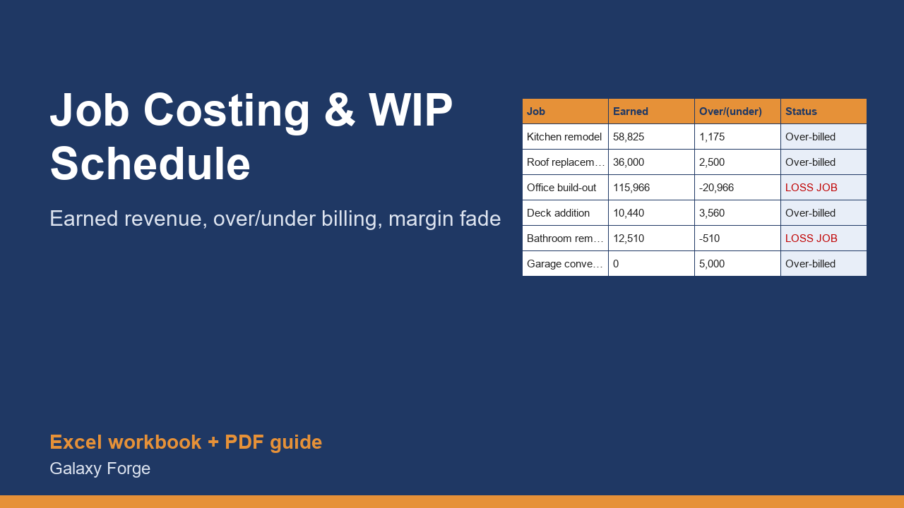

Track every job's cost to date, estimated cost to complete and billings, and see earned revenue, over/under billing, projected margin and margin fade on one work-in-progress schedule.
A work-in-progress (WIP) schedule answers three questions a contractor cannot answer from the bank balance: how much of each job have we really earned, are we billing ahead of or behind the work, and what will each job finish at.
For every job you enter the contract, approved change orders, cost to date, your honest estimate of the cost still to come, and what you have billed. The workbook computes the percent complete (cost to date / revised total cost), earned revenue, over or under billing, projected gross profit and margin, and how far the margin has faded from the bid.
A job that is over-billed holds the customer's money for work you still owe; a job that is under-billed means you are financing the customer. Sureties, banks and buyers of a contracting business all read the schedule this way, and so should you.
1) Open the Jobs sheet. 2) Replace the six example jobs with your own: contract, change orders, cost to date from your books, a realistic estimate of cost to complete, billed to date and the cost you originally bid. 3) Read the Status column and the Summary sheet. 4) Update cost to date, cost to complete and billed amounts at the end of every month and keep one copy per month for your records.
Free guide: How to Calculate Over/Under Billing on a Construction WIP Schedule
Price: $49, one-time. Download: contractor_job_costing_wip_schedule.xlsx (Jobs, Summary) and this guide. Works in Excel 2016 or later, Excel for Mac and Excel on the web; opens in Google Sheets and LibreOffice.
New product, listed 2026-11-05: no sales or reviews yet. Example figures in the workbook are illustrative.
This workbook is a calculation tool, not accounting, tax, legal or surety advice. It uses the cost-to-cost percentage-of-completion method; your CPA decides which revenue-recognition method applies to your business and your bonding company or lender may require its own format.